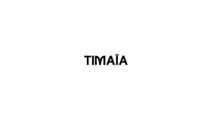

Trade Mark Journal No.2025/042 17 October 2025
UK00004273519 4 October 2025 (3,4)
Mark 1

Mark 2
International priority date claimed: 17 September 2025
(Egypt)
(0585963)
- Class 3
- Perfume; Perfumes; Perfume oils; Perfumery and fragrances; Amber [perfume]; Fragrances; Oils for perfumes and scents; Fragrance sachets; Musk [perfumery]; Cologne; Perfume water; Aromatics for perfumes; Room perfume sprays; Liquid perfumes; Potpourris [fragrances]; Colognes; Scents; Fragrance emitting wicks for room fragrance; Aromatics for fragrances; Perfumery; Perfumes for cardboard; Fragrance refills for non-electric room fragrance dispensers; Cedarwood perfumery; Extracts of perfumes; Eau de cologne [cologne water]; Extracts of flowers [perfumes]; Flowers (Extracts of -) [perfumes]; Extracts of flowers being perfumes; Body deodorants [perfumery]; Perfumes for ceramics; Ionone [perfumery]; Deodorants for personal use [perfumery]; Aftershave lotions; Perfumeries; Body fragrances; Fragrance preparations; Perfume oils for the manufacture of cosmetic preparations; Perfumed potpourris; Vanilla perfumery; Household fragrances; Fragrances for automobiles; Perfumed sachets; Room perfumes in spray form; Fragrance sachets for eye pillows; Natural oils for perfumes; Perfumery products; Aftershave; Room fragrances; Feminine deodorant sprays; Perfumed soaps; Mint for perfumery; Cologne water; Solid perfumes; After-shave lotions; Scented water for fragrancing; Air fragrance preparations; Perfuming sachets; Perfumed soap; Peppermint oil [perfumery]; Aftershave balms; Scented oils; Scented linen sprays; Synthetic perfumery; Scented sachets; Aftershave balm; Air fragrance reed diffusers; Perfumed powders [for cosmetic use]; Aftershaves; Geraniol for fragrancing; Scented body lotions; Synthetic vanillin [perfumery]; Perfumed powder [for cosmetic use]; Scented soaps; Incense spray; Perfumed powders; Perfumed creams; Scented body spray; Eau de Cologne; Eau de cologne; Suntan lotion [cosmetics]; Essential oils as perfume for laundry purposes; Sachets for perfuming linen; Linen (Sachets for perfuming -); Perfumed powder; Essences for fragrancing; Eau de colognes; Ethereal oils for fragrancing; Scented room sprays; Fumigation preparations [perfumes]; After-sun oils [cosmetics]; Perfumed lotions [toilet preparations]; Suntan oils [cosmetics]; After-shave; Fragrance for household purposes; Aromatherapy lotions; After-shave balms; Eaux de Cologne; Eaux de cologne; Aftershave creams; Scented body lotions and creams; Scented fabric refresher sprays; Skin fresheners [cosmetics]; Tanning oils [cosmetics]; Perfumed body lotions [toilet preparations]; Deodorant soap; Soap (Deodorant -); Fragrant sachets; Incense sachets; Aftershave milk; Agarwood [incense]; Geraniol fragrancing compounds; Roll-on deodorants [toiletries]; Natural perfumery; Cosmetics; Perfumed water; Eau de parfum; Aromatic potpourris; Refills for electric room fragrance dispensers; Scented oils used to produce aromas when heated; Fragrances for personal use; Perfumed oils for skin care; Aromatic oils for the bath; Scented body creams; Room fragrancing products; Pomanders [aromatic substances]; Aftershave moisturising cream; Scented water; Synthetic musk; Scented wood; Jasmine oil; Beauty lotions; Scented fabric refresher spray; Skincare cosmetics; Room scenting sprays; Musk [natural]; Natural musk; Scented bathing salts; Scented pine cones; Lavender gel; Scented toilet waters; Scented linen water; Scented wax melts; Essential oils; Cleansing oil; Tissues impregnated with essential oils, for cosmetic use; Rosemary oil for cosmetic use; Body oil; Lavender oil for cosmetic use; Citronella oil for cosmetic use; Massage oil; Eucalyptus oil for cosmetic use; Combing oil; Shaving oil; Castor oil for cosmetic purposes; Hair oil; Scented ceramic stones; Cushions impregnated with perfumed substances; Perfumed tissues; Cushions filled with perfumed substances; Cushions impregnated with fragrant substances; Cushions filled with fragrant substances; Potpourri sachets for incorporating in aromatherapy pillows; Moist wipes impregnated with a cosmetic lotion; Almond soaps; Moist paper hand towels impregnated with a cosmetic lotion; Incense; Aromatherapy creams; Eau de toilette; Eaux de toilette; Aftershave emulsions; After-shave creams; After-shave emulsions; Aftershave gels; Cologne impregnated disposable wipes; Ambergris; Body lotion; Body lotions; Body oils; Body butters; Body moisturisers; Body wash; Body deodorants; Body washes; Body scrubs; Body scrub; Body sprays; Body butter; Body spray; Body milk; Body gels; Body mist; Body shampoos; Body masks; Body powder; Face and body lotions; Body soap; Body cream; Body creams; Body emulsions; Body and facial oils; Body polish; Body and facial butters; Body milks; Body soufflé; Body glitter; Body splash; Body mask lotion; Moisture body lotion; Make-up for the face and body; Body massage oils; Hair and body wash; Deodorants for body care; Body glitters; Body cleansing foams; Hand and body butter; Face and body creams; Body oils [for cosmetic use]; Lotions for face and body care; Sparkling fluid for the body; Cosmetic body mud; Non-medicated body soaks; Face and body glitter; Body oil [for cosmetic use]; Toning lotion, for the face, body and hands; Baby body milks; Cosmetic body scrubs; Body scrubs [cosmetic]; Face and body masks; Body mask powder; Body mask cream; Moisturizing body lotions; Exfoliating scrubs for the body; Body oil spray; Body care cosmetics; Preparations for the conditioning of the body; Body sprays [non-medicated]; Body gels [cosmetics]; Soaps for body care; Body powder (Non-medicated -); Body and facial gels [cosmetics]; Exfoliating body scrub; Body firming creams; Beauty tonics for application to the body; Preparations for the care of the body; Body cream soap; Face masks; Make-up for the face; Face wash; Face wipes; Face blusher; Face scrub; Face creams; Face powder; Face glitter; Face powders; Face packs; Face gels; Face oils; Face wash [cosmetic]; Pressed face powder; Cleaning masks for the face; Face powder [for cosmetic use]; Loose face powder; Exfoliating scrubs for the face; Face packs [cosmetic]; Make-up preparations for the face and body; Liquid soaps for hands and face; Face scrubs (Non-medicated -); Face cream (Non-medicated -); Cosmetic face powders; Face powder (Non-medicated -); Face powders [for cosmetic use]; Creamy face powder; Face dusting powders; Cosmetic paste for application to the face to counteract glare; Cosmetic white face powder; Face creams for cosmetic use; Beauty tonics for application to the face; Face lifting stickers for cosmetic use; Face powder in the form of powder-coated paper; Eyes make-up; Beauty masks for hands; Non-medicated face care preparations; Disposable wipes impregnated with cleansing compounds for use on the face; Hand masks for skin care; Facial masks; Facial beauty masks; Facial wash; Cosmetic creams for firming skin around eyes; Skin masks; Clay skin masks; Skin moisturizer masks; Hair masks; Foot masks for skin care; Cosmetic facial masks; Facial masks [cosmetic]; Facial concealer; Facial washes; Facial makeup; Gel eye masks; Eye make-up; Cosmetics in the form of eye shadow; Skin make-up; Pores tightening mask packs used as cosmetics; Skin moisturizer; Skin moisturiser; Skin moisturizers; Skin moisturisers; Skin lotion; Skin lotions; Lotions for the skin; Skin cleansers; Skin creams; Creams for the skin; Skin hydrators; Skin emollients; Skin toner; Skin cream; Oils for the skin; Skin toners; Cosmetics for use in the treatment of wrinkled skin; Skin cleansing lotion; Skin soap; Exfoliants for the care of the skin; Cosmetics for protecting the skin from sunburn; Skin moisturizers used as cosmetics; Skin lightening creams; Skin conditioners; Colour cosmetics for the skin; Skin foundation; Skin cleansing cream; Cosmetic creams for dry skin; Skin cleansers [cosmetic]; Cosmetic creams for the skin; Skin creams [cosmetic]; Skin creams [for cosmetic use]; Skin texturizers; Milky lotions for skin care; Exfoliants for the cleansing of the skin; Cosmetics for the treatment of dry skin; Skin toners [cosmetic]; Moisturizing preparations for the skin; Skin care cosmetics; Skin fresheners; Creams for firming the skin; Skin cream [for cosmetic use]; Skin care mousse; Skin calming serum; Tissues impregnated with a skin cleanser; Moisturising skin lotions [cosmetic]; Moisturising skin creams [cosmetic]; Non-medicated skin serums; Skin masks [cosmetics]; Skin balms [cosmetic]; Cosmetics for use on the skin; Skin care creams [cosmetic]; Cosmetic creams for skin care; Skin care lotions [cosmetic]; Skin care oils [cosmetic]; Skin cleansers [non-medicated]; Skin clarifiers; Skin creams [non-medicated]; Non-medicated skin creams; Skin relief serum [cosmetic]; Skin cleansing foams; Non-medicated skin lotions; Essences for skin care; Skin emollients [non-medicated]; Skin cleansing cream [non-medicated]; Smoothing emulsions for the skin; Skin recovery creams [cosmetics]; Cosmetic skin fresheners; Cleansing milks for skin care; Skin care oils [non-medicated]; Cosmetic skin enhancers; Oils for moisturising the skin after sunbathing; Skin care preparations; Skin tonics [non-medicated]; Skin balms (Non-medicated -); Non-medicated skin balms; Cosmetic preparations for skin firming; Wrinkle removing skin care preparations; Skin hydrators for cosmetic purposes; Non-medicated stimulating lotions for the skin; Skin softening preparations; Cloths impregnated with a skin cleanser; Skin care (Cosmetic preparations for -); Cosmetic preparations for skin care; Skin, eye and nail care preparations; Non-medicated skin clarifying lotions; Skin cleaners [non-medicated]; Wipes impregnated with a skin cleanser; Non medicated skin toners; Air fragrancing preparations; Hair shampoo; Hair shampoos; Hair conditioner; Hair mousse; Hair serums; Hair lotion; Hair lotions; Hair cosmetics; Hair gel; Hair moisturizers; Hair rinses; Hair conditioners; Hair wax; Hair styling lotions; Hair moisturisers; Hair oils; Hair spray; Shampoos for human hair; Hair styling gel; Hair creams; Hair cream; Hair gels; Hair powder; Styling sprays for the hair; Baby hair conditioner; Hair tonics; Hair styling waxes; Hair styling spray; Hair balsam; Styling gels for the hair; Hair styling gels; Hair balm; Hair balms; Hair tonic; Hair liquid; Styling paste for hair; Non-medicated hair shampoos; Hair rinses [for cosmetic use]; Cosmetic preparations for the hair and scalp; Wax treatments for the hair; Hair liquids; Shampoo; Dandruff shampoo; Shampoos; Waterless shampoo; Baby shampoo; Baby shampoo mousse; Shampoo bars; Dry shampoos; Emollient shampoos; Waterless shampoos; Non-medicated shampoos; Hair moisturising conditioners; Hair conditioner bars; Shampoos for babies; Hair rinses [shampoo-conditioners]; Non-medicated hair lotions; Hair sprays; Cosmetic hair lotions; Mousses [toiletries] for use in styling the hair; Shower soap; Creams (Soap -) for use in washing; Hair emollients; Refill packs for shampoo dispensers; Non-medicated balm for hair; Aloe soap; Oils for hair conditioning; Shaving lotion; Bath lotion; Shaving soap; Hair care lotions; Hair tonic [non-medicated]; Conditioners for treating the hair; Hair mascara; Hair tonic [for cosmetic use]; Hair conditioners for babies; Antiperspirant soap; Soap (Antiperspirant -); Hair strengthening treatment lotions; Shaving soaps; Shaving lotions; Shower and bath gel; Bath and shower gel; Bath soap; Aloe soaps; Hair care lotions [for cosmetic use]; After-shave gel; Conditioners in the form of sprays for the scalp; Hair tonics [for cosmetic use]; Hair-washing powder; Shower gel; Gels for fixing hair; Bath and shower oils [non-medicated]; Soap products; Conditioners for use on the hair; Lip conditioners; Conditioning balsam; Conditioning creams; Conditioning preparations for the hair; Lip balm; Lip balms; Lip balm [non-medicated]; Non-medicated lip balms; Lip balms [non-medicated]; Lip cream; Lip gloss; Lip glosses; Lip makeup; Lip cosmetics; Lip pomades; Shaving balm; Lip liner; Lip gloss palettes; Lip tints; Beard balm; Shave balm; Cleansing balm; Lip liners; Blemish balm creams; Lip pencils; Lip neutralizers; Lip rouge; Lip protectors [cosmetic]; Beauty balm creams; Lip polisher; Lip stains [cosmetics]; Lip protectors (Non-medicated -); Shaving balms; Lip coatings (Non-medicated -); Lip coatings [cosmetic]; Lip care preparations; Non-medicated lip care preparations; Balms (Non-medicated -); Lip stains for cosmetic purposes; Foot balms (Non-medicated -); Moisturising body lotion [cosmetic]; Lipstick; Moisturizing creams; Mattifying gel cream; Cosmetic nourishing creams; Moisturising gels [cosmetic]; Moisturising creams; Facial lotion; Sun protectors for lips; Eyebrow gel; Cleansing cream; Refill packs for skin care cream dispensers; Moisturising creams, lotions and gels; Eyebrow mascara; Hydrating creams for cosmetic use; Cleansing creams [cosmetic]; Facial cream [for cosmetic use]; Cosmetic pencils for cheeks; Eye wrinkle lotions; Hand lotion (Non-medicated -); Non-medicated scalp treatment cream; After-sun lotions [for cosmetic use]; Non-medicated cleansing creams; Facial butters; Body and facial creams [cosmetics]; Facial moisturisers [cosmetic]; Gel scrub; Soap; Soaps; Toilet soap; Liquid soap; Soap powder; Handmade soap; Soap powders; Almond soap; Bars of soap; Cosmetic soap; Bar soap; Waterless soap; Sugar soap; Liquid bath soap; Loofah soaps; Carbolic soaps; Cakes of soap; Soap (Cakes of -); Hand soap; Granulated soap; Dish soaps; Soap pads; Beauty soap; Bath soaps; Toilet soaps; Cakes of toilet soap; Liquid soaps; Soap solutions; Cakes of soap for body washing; Liquid bath soaps; Cream soaps; Liquid soap used in foot bath; Soaps and gels; Non-medicated toilet soaps; Saddle soaps; Cosmetic soaps; Liquid soap used in foot baths; Soap free washing emulsions for the body; Sponges impregnated with soaps; Facial soaps; Non-medicated soaps; Granulated soaps; Hand soaps; Soaps in gel form; Soaps for toilet purposes; Cakes of soap for household cleaning purposes; Soaps for household use; Soaps in liquid form; Soapy gels; Refill packs for hand soap dispensers; Foaming bath gels; Cleansing lotions; Hand washes; Hand cleansers; Hand cleaner; Hand cleaners [hand cleaning preparations]; Hand lotions; Hand scrubs; Hand cream; Hand creams; Hand gels; Hand powders; Hand milks; Hand cleaning preparations; Hand oils (Non-medicated -); Paper hand towels impregnated with cleaning agents; Cosmetic hand creams; Washing creams; Paper hand towels impregnated with cosmetics; Suntan lotions; Sunscreen lotions; Exfoliating scrubs for the hands; Cosmetic sun milk lotions; Facial lotions; Non-medicated foot lotions; Cosmetic suntan lotions; Anti-wrinkle cream; Shaving cream; Anti-aging cream; Sunscreen cream; Facial cream; Bath cream; Cuticle cream; Cold cream; Shower cream; Eye cream; Base cream; Anti-wrinkle cream [for cosmetic use]; Cream foundation; Day cream; Night cream; Anti-wrinkle creams; Wrinkle resistant cream; Cream cleaners (Non-medicated -); Shaving creams; Retinol cream for cosmetic purposes; After-sun lotions; Baby lotion; Suncare lotions; Sun-block lotions; Sun tan lotion; Day lotion; Sunscreen creams; Bathing lotions; Massage oils and lotions; Bath lotions (Non-medicated -); Cosmetic creams and lotions; Moisturiser; After-sun creams; Moisturizers; Sunscreen creams [for cosmetic use]; Baby lotions; Non-medicated lotions; Exfoliant creams; Pre-shave creams; After-sun milk [cosmetics]; Shower creams; Exfoliating creams; Moisturisers; Styling lotions; Cosmetic facial lotions; Facial lotions [cosmetic]; Hair protection lotions; Body creams [cosmetics]; After-sun milks [cosmetics]; Cosmetics in the form of lotions; Moisturisers [cosmetics]; Anti-aging moisturizers used as cosmetics; Moisturizing milk; Facial moisturizers; Facial oil; Baby oil; Bath oil; Beard oil; Hair fixing oil; Rose oil; Mineral oils [cosmetic]; Oil baths for hair care; Japanese hair fixing oil (bintsuke-abura); Hair nourishers; Aromatherapy preparations; Massage oils; Facial massage oils; Massage candles for cosmetic purposes; Bath oils; Aromatherapy pillows comprising potpourri in fabric containers; Massage oils, not medicated; Bath oils (Non-medicated -); Non-medicated bath oils; Non-medicated shower oils; Bath herbs; Shower oils; Bath oils for cosmetic purposes; Ethereal essences and oils; Non-medicated oils; Cosmetic massage creams; Non-medicated massage preparations; Distilled oils for beauty care; Facial oils; Massage waxes; Cosmetics in the form of oils; Piperonal fragrancing compounds; Heliotropin fragrancing compounds; Potpourris; Geraniol for cosmetic use; Geraniol for cosmetic purposes; Natural cosmetics; Bath milk; Cleansing milk; Beauty milk; Facial cleansing milk; After-sun milk; Creams (Non-medicated -) for the body; Bath salts; Shower and bath foam; Bath and shower foam; Bubble bath; Bath and shower preparations; Shower and bath preparations; Preparations for use in the bath or shower; Preparations for the bath and shower; Bath and shower gels; Bath gel; Bath creams; Bath powder; Bath gels; Bath bombs; Non-medicated bath salts; Cosmetic bath salts; Foams for the bath; Bath foams; Bath crystals; Bath foam; Foam bath; Bath beads; Baby bubble bath; Bath flakes; Bath preparations; Preparations for the bath; Cosmetic preparations for bath and shower; Bath pearls; Bubble bath preparations; Bubble bath [for cosmetic use]; Baby bath mousse; Bath crystals (Non-medicated -); Bubble baths; Bath foams (Non-medicated -); Bath powder [cosmetics]; Foam bath preparations; Bath creams (Non-medicated -); Bath gels (Non-medicated -); Bath soak for cosmetic use; Bath pearls (Non-medicated -); Non-medicated bubble bath preparations; Foaming bath liquids; Bubble bath preparations [for cosmetic use]; Bath powders (Non-medicated -); Non-medicated bath preparations; Bath preparations (Non-medicated -); Shower gels; Aloe vera gel for cosmetic purposes; Refill packs for shower gel dispensers; Cleansing gels; Cosmetics in the form of gels; Styling gels; Hair protection gels; Gels for use on the hair; Gel eye patches for cosmetic purposes; Facial gels [cosmetics]; Beauty gels; Eye gels; Gels for cosmetic use; Make-up removing gels; Cosmetic eye gels; Bath and shower gels, not for medical purposes; Body cream for cosmetic use; Beauty creams for body care; Reed diffusers.
- Class 4
- Aromatherapy fragrance candles; Musk scented candles; Perfumed candles; Candles (Perfumed -); Scented candles; Fragranced candles; Oils for fragrancing; Lanolin for use in the manufacture of cosmetics and ointments; Candles; Candles and wicks for candles for lighting; Tealight candles; Votive candles; Wicks for candles; Tallow candles; Soy candles; Candles in tins; Fruit candles; Candles for use as nightlights; Nightlights [candles]; Wicks for candles for lighting; Candles and wicks for lighting; Tea light candles; Beeswax for use in the manufacture of candles; Bougies in the nature of wax candles; Candles for lighting; Floating candles; Candle wax; Wax for making candles; Table candles.
Sherin Sherif